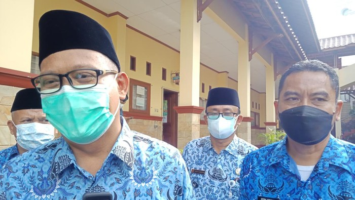

Berita
-
Omicron Meningkat, Luhut: Hanya yang Sudah Vaksinasi 2 Kali Dapat Beraktivitas di Tempat Publik
Menteri Koordinator Bidang Kemaritiman dan Investasi Luhut Binsar Pandjaitan menyebutkan, kasus harian virus varian Omicron di Indonesia kini telah menyentuh angka 1.054. Luhut yang juga Koordinator Penanganan PPKM wilayah Jawa-Bali menyatakan, pemerintah kembali memperketat syarat aktivitas masyarakat di tempat-tempat publik seiring dengan meningkatnya angka kasus harian varian Omicron. Lihat Detail
-

Gempa Hari Ini Jumat 14 Januari 2022, 5 Kali Guncang Indonesia
Gempa kembali menggetarkan sejumlah wilayah di Indonesia pada hari ini, (14/1/2022). Hingga pukul 19.30 WIB, ada lima kali lindu terjadi di Nusantara. Menurut Badan Meteorologi, Klimatologi, dan Geofisika (BMKG), dua kali gempa tersebut terjadi di wilayah Sumur, Provinsi Banten. Lihat Detail
-

Wawalkot Depok Minta Tak Ada Pedagang di Luar Sekolah Saat PTM 100 Persen
Pemerintah Kota Depok tengah mempersiapkan pelaksanaan pembelajaran tatap muka (PTM) kapasitas 100 persen. Wakil Wali Kota Depok Imam Budi Hartono meminta tidak ada pedagang yang berjualan di luar sekolah saat PTM 100 persen berlangsung. Lihat detail
-

4 Fakta Kebakaran Gedung Cyber Jakarta, Korban hingga Penyebabnya.
Kebakaran terjadi di Gedung Cyber Jalan Kuningan Barat Raya, Mampang Prapatan, Jakarta Selatan pada Kamis (2/12/2021). Gedung tersebut merupakan salah satu lokasi penyimpanan server atau data center sejumlah perusahaan teknologi di Indonesia. Sebanyak 22 unit mobil pemadam kebakaran dikerahkan ke lokasi. Sekitar 30 menit kemudian, api berhasil dipadamkan. Lihat Detail